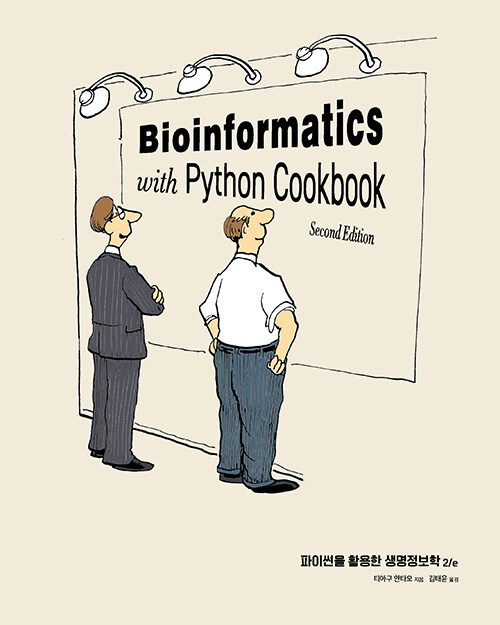

파이썬을 활용한 생명정보학 2/e
News
Book

원제 : Bioinformatics with Python Cookbook - Second Edition
생명정보학 데이터를 파이썬 프로그래밍 기법과 프레임워크를 사용해 처리한다. 차세대 염기서열 분석, 유전체학, 메타지노믹스(metagenomics), 집단 유전학, 계통 발생학, 프로테오믹스(proteomics)의 내용을 다룬다. 다양한 파이썬 도구와 라이브러리로 데이터를 변환, 분석, 시각화하는 최신 프로그래밍 기법을 배운다. 차세대 염기서열 분석 데이터의 필터링(filtering) 기술과 병렬처리 프레임워크(framework)인 대스크(Dask)와 스파크(Spark)도 소개한다.
1 목차
- 1장. 파이썬과 주변 생태계
- 소개
- 아나콘다를 사용한 필요 소프트웨어 설치
- 도커를 사용한 필요 소프트웨어 설치
- rpy2를 통해 R과 인터페이스 만들기
- 주피터 노트북에서 R 매직 명령어 사용하기
- 2장. 차세대 염기서열 분석
- 소개
- NCBI와 진뱅크 데이터베이스 둘러보기
- 염기서열 분석의 기초
- 배우기
- FASTQ 파일 다루기
- 정렬 데이터 다루기
- VCF 파일 데이터 분석하기
- 게놈 접근성과 SNP 데이터 필터하기
- HTSeq로 NGS 데이터 처리하기
- 3장. 게놈 데이터 다루기
- 소개
- 좋은 품질의 참조 게놈 다루기
- 낮은 품질의 참조 게놈 다루기
- 게놈 주석 살펴보기
- 게놈 주석으로 원하는 유전자 추출하기
- Ensembl REST API로 오소로그검색
- Ensembl REST API로 유전자 온톨로지 정보 검색
- 4장. 집단유전학
- 소개
- PLINK 형식 데이터셋 관리하기
- Genepop 파일 형식 소개
- Bio.PopGen으로 데이터셋 탐색하기
- F - 통계 계산하기
- 주성분 분석하기
- ADMIXTURE 프로그램으로 집단 구조 조사하기
- 5장. 집단유전학 시뮬레이션
- 소개
- 순방향 시뮬레이터 소개
- 선택 시뮬레이션
- 섬 모델과 디딤돌 모델을 사용한 시뮬레이션
- 복잡한 집단 통계 모델 만들기
- 6장. 계통 발생학
- 소개
- 계통 발생학 분석을 위한 데이터셋 준비
- 유전자와 게놈 데이터 정렬
- 서열 데이터 비교하기
- 계통수 그리기
- 재귀적으로 계통수 다루기
- 계통수 시각화하기
- 7장. 단백질 데이터 뱅크 사용하기
- 소개
- 데이터베이스에서 단백질 정보 찾기
- Bio.PDB 소개
- PDB 파일에서 더 많은 정보 추출하기
- PDB 파일에서 분자간 거리 계산
- 기하학적 계산하기
- PyMOL로 애니메이션 만들기
- Biopython을 사용해 mmCIF 파일 파싱하기
- 8장. 생명정보학 파이프라인
- 소개
- 갤럭시 서버 소개
- API를 사용해 갤럭시 사용하기
- 갤럭시 도구 개발
- 일반적인 파이프라인 사용법
- Airflow를 사용해 유전변이 분석 파이프라인 만들기
- 9장. 파이썬으로 유전체 빅데이터 다루기
- 소개
- HDF5 데이터 형식
- 대스크 라이브러리로 병렬분산처리
- 파케이 데이터 형식
- 스파크 라이브러리로 병렬분산처리
- 사이썬과 눔바로 코드 최적화
- 10장. 생명정보학의 다른 주제들
- 소개
- QIIME2로 메타지노믹스 분석하기
- 생식세포계열로 공통 염색체 찾기
- REST API로 GBIF 데이터베이스 사용하기
- GBIF의 지리 참조 데이터 다루기
- 사이토스케이프로 단백질 네트워크 시각화
- 11장. 고급 차세대 염기서열 분석
- 소개
- 분석을 위한 데이터셋 준비하기
- 멘델리언 오류로 데이터 품질 관리
- 의사 결정 나무를 사용한 데이터 탐색
- 표준 통계로 데이터 탐색
- 주석 데이터로 생물학적 특성 찾기